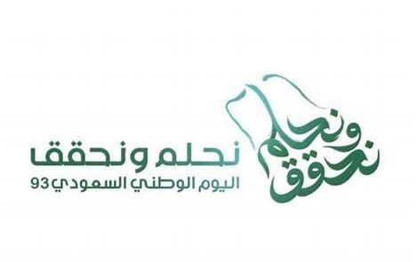

The Kingdom of Saudi Arabia’s leadership and people will celebrate tomorrow, Saturday,
September 23, 2023, the 92th National Day of Saudi Arabia, after the historical announcement of
the late King Abdulaziz bin Abdulrahman Al Saud of Saudi Arabia’s unification under "There is no
god but Allah; Muhammad is the Messenger of Allah" banner.
Saudi National Day is the day on which the late founder named the Kingdom of Saudi Arabia
throughout the country, after 32 years of wars. On that day, a young country was established that
prided itself by the application of the Islamic Sharia and its preservation of human values,
promoting peace and goodness and in search of knowledge and development towards a better future
for its people, the Islamic nation and the whole world.
King Abdulaziz ordered at the beginning of structuring Saudi Arabia to pay great attention to the
Two Holy Mosques and their expansion and to serving pilgrims and Umrah performers, as well as
establishing schools and hospitals, building villages, rehabilitating the soil, and exploring irrigation
water in order to support agriculture.
Then, King Saud bin Abdulaziz Al Saud was the first to follow this approach and to work within its
framework until the features of progress emerged and the structures of a number of basic
institutions and agencies in the country were completed.
In the era of the pioneer of Islamic solidarity, who succeeded King Saud, King Faisal bin Abdulaziz
Al Saud, achieving accomplishments continued, and during his reign, the Kingdom of Saudi Arabia
began the implementation of the ambitious five-year plans for development.
In the reign of King Khalid bin Abdulaziz Al Saud, building and growth continued to serve the
country and citizens in particular and Islam and Muslims in general. The development plans also
connected with each other for the sake of achieving more prosperity and stability.
The achievements during the reign of King Fahd bin Abdulaziz Al Saud were characterized by
comprehensiveness and integration to form a comprehensive development process for building a
nation and a wise and unique leadership that embodied many qualities that he had, the most
prominent of which was his adherence to the holy Quran and prophetic Sunnah, and his dedication
to serving his homeland, citizens, the Islamic nation and the entire humankind.
During the era of the Custodian of the Two Holy Mosques King Abdullah bin Abdulaziz Al Saud,
the Kingdom of Saudi Arabia witnessed more giant developmental achievements throughout the
nation in various sectors, including education, health, transportation, industry, electricity, water,
agriculture and the economy.
Today, Saudi Arabia witnesses a distinguished present, looking forward to a more distinguished
future full of confidence in the title of the stage, the Custodian of the Two Holy Mosques King
Salman bin Abdulaziz Al Saud, who has been making, since the beginning of his reign, an effort to
advance Saudi Arabia. The activities varied in various fields at regional and international levels,
preceded by accomplishments at various stages during his reign in many positions.
Today, Saudi Arabia’s National Day passes by while we live in a bright reality established by the
late founder King Abdulaziz. source : SPA
| store | offers | date | link |
|---|---|---|---|
| balsam | la belle brush solo | til 20sep | click here to find offers |
| black box | best offers on all electronic | till 30sep | click here to find offers |
| cityW | selas up to 93% | till 29sep | click here to find offers |
| Extra | on mobiles up to 30% | till 28sep | click here to find offers |